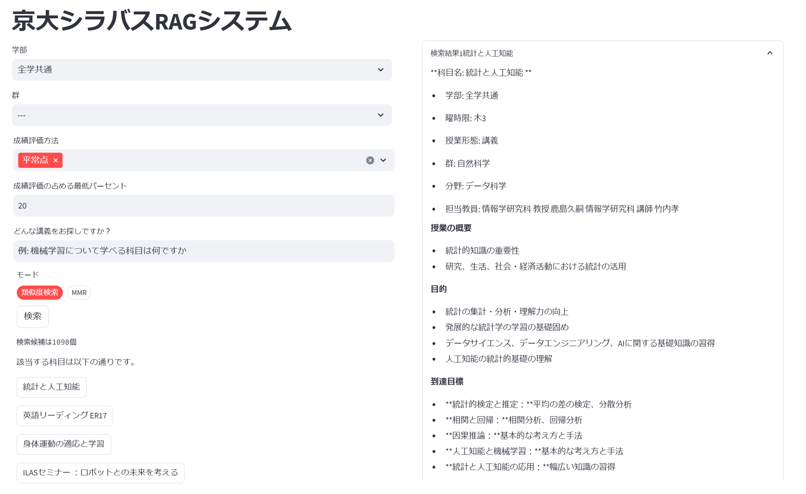
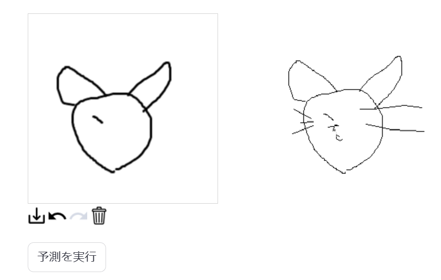
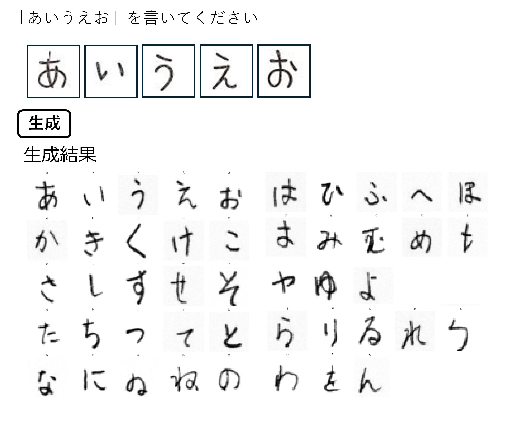
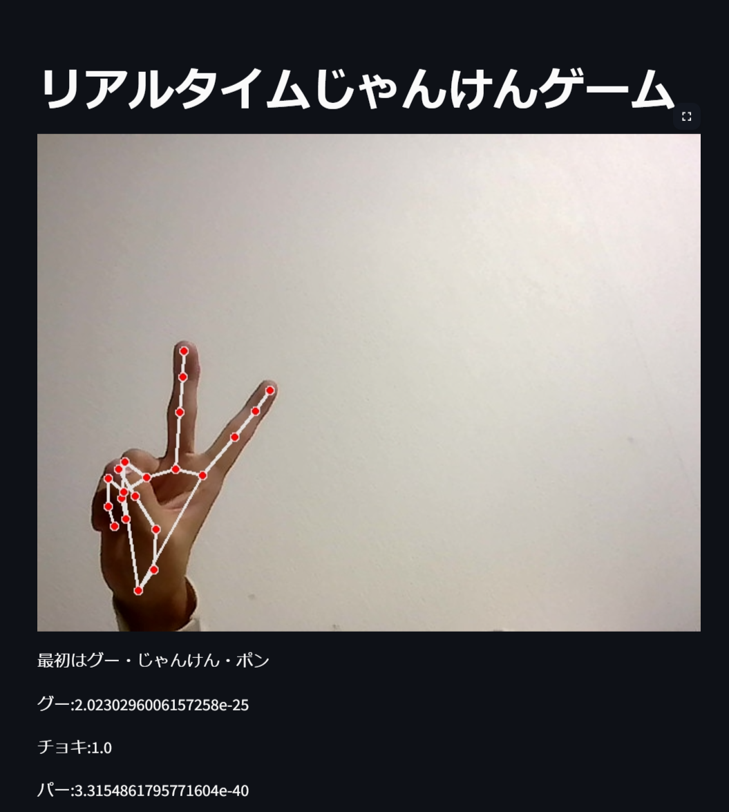
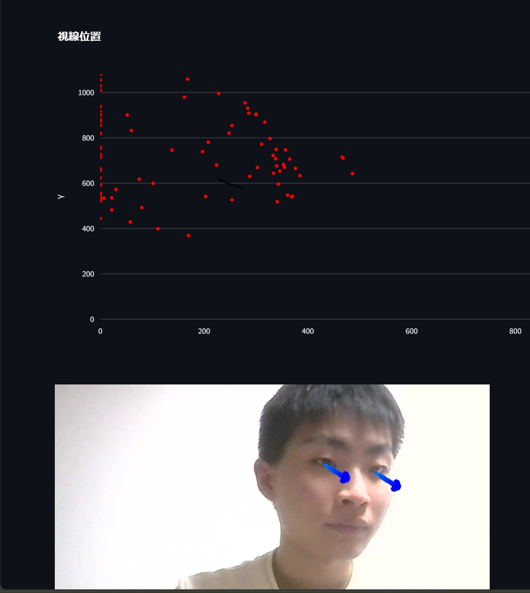
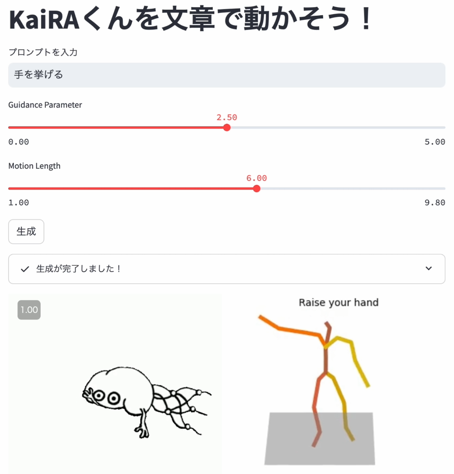

サークル紹介
京都大学人工知能研究会 KaiRAは、AIについて学んでいるサークルです。
毎週木曜日に勉強会を行っており、今期は大規模言語モデルについての本の輪読と、物体検出モデルの論文読みをしています。 読みたい本・論文があれば、人を集めてみんなで読むことも可能です!
週に一度コード読み・実装会も行っており、各回でテーマを決めて、Kaggleの上位解法を読んだり、ライブラリのコードを読んだりなどをしています。
活動の中心は毎週木曜日の勉強会とコード読み・実装会ですが、制作物を作ったり、チームを組んでkaggleなどの機械学習コンペティションに参加したりもしています。
スポンサーとして株式会社Ristさんと株式会社スクラムサインさんが付いてくださっており、サークルメンバーに対して本の購入補助や計算機代の補助もしています。
11月祭の展示で興味を持った方がいればぜひ一緒に勉強しましょう！
会誌
11月祭に向けてサークルメンバーで会誌を作成しました。少しでもAIの技術について興味を持っていただけたら幸いです。
今年の会誌は主に、AIデモの内容について、使われている技術や実験内容を書きました。
- 第1章：カメラ入力を用いた強化学習によるライントレーサの実現
- 第2章：目線で操るマウスカーソル
- 第3章：KaiRAくんを動かそう
- 第4章：最強じゃんけんAI
- 第5章：京大シラバス検索RAGシステム-システム概要編
- 第6章：京大シラバス検索RAGシステム-検索手法編
- 第7章：お絵描き予測AI
- 参考文献
デモ
11月祭会場ではAIに関するデモを行っていますが、一部のデモはオンラインでもご覧になれます。 ぜひ楽しんでいってください！！
京大シラバス検索RAGシステム

RAGとは、大規模言語モデルの生成に外部データの検索機能を組み合わせる手法です。 今回は、京都大学の科目情報が書かれたシラバスのデータを用いて、検索した内容に合致する授業とその授業シラバスの要約を生成します。
お絵描き予測AI

Quick, Draw！というGoogleのウェブアプリで集められたデータセットを用いて、線画を生成するモデルを学習させました。 人間が書いた途中までの絵から、完成形を予想し続きを描いてくれるAIです。
手書きフォント生成AI

一部のひらがなの書き方から、その人の筆跡を学習し、筆跡を真似たひらがなを生成するAIです。
最強じゃんけんAI

骨格推定モデル「MediaPipe」を使用し、人間が出した手の動きからじゃんけんの手を予測するAIとなっています。
目線で操るマウスカーソル

プログラミングなどのキーボードを操作しながら、マウスカーソルも動かしたい事は多々ありますが、そのたびにマウスを操作するのは面倒です。 そこで、手を動かさずに目線だけでカーソルを操作できる新しいインターフェースを作成しました。
KaiRAくんを動かそう

当サークルのマスコットキャラクターであるKaiRAくんに、自然言語を用いて指示を出し、動かしてみましょう。